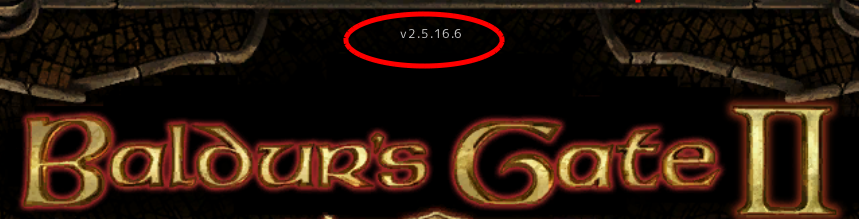
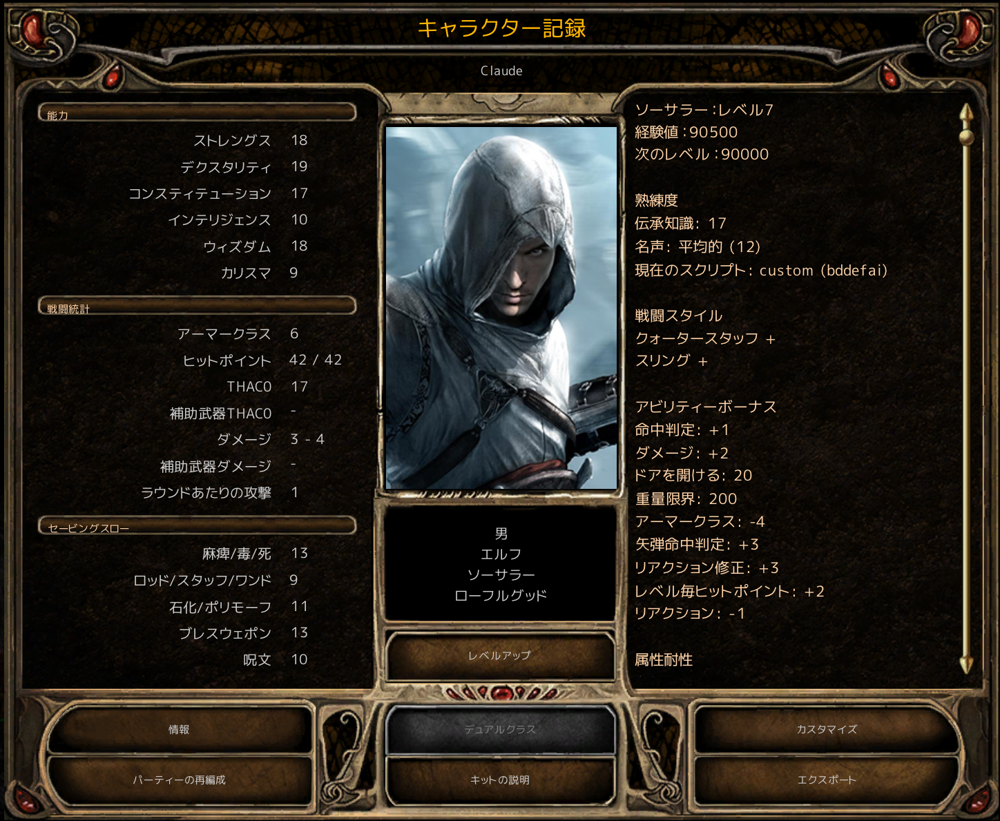
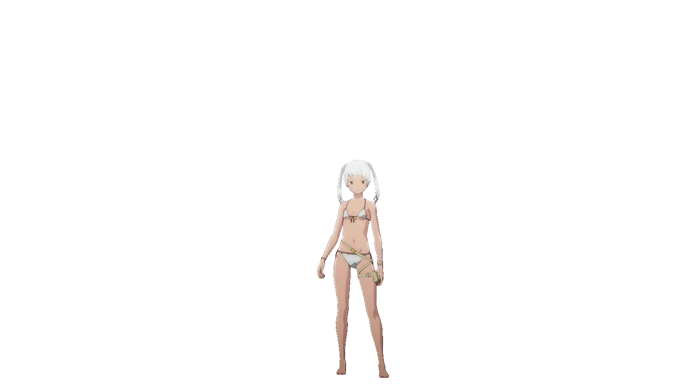

目次
最初に
BG2EEをソーサラーでプレイしてみようと思う。😋
日本語でプレイしようとすると、パッチが必要など、ゲーム以外のノウハウも必要なので備忘録としてまとめる。
以前プレイしたゲームの自キャラのSnow（→）と共に楽しく記録していきたい。✨
私はこのゲームがうまいわけでも何でもないが、時々発作に襲われて、周期的にプレイしたくなるので、
自衛のためにプレイ動画をまとめようと思う😅

日本語化
BGEE2は英語版のみなので、下記の３ステップで環境を整えた。
Step1 BG2EEを2.5に変更（日本語化パッチが2.5にしか対応していないため）
Step2 日本語化
Step3 UIの改善
Step1 BG2EEを2.5に変更

① Steamのライブラリの『Baldur's Gate II EE』を右クリック
② プロパティ
③ ゲームバージョンとベータ
④ bgiiee_2.5を選択
⑤ ダウンロードが終わるまで待った
ゲームのタイトル画面の上部に表示されたバージョンが2.5になった。
Step2 日本語化
① 日本語化パッチを入手
BGEE Spoiler Wikiの日本語化ページのリンクをたどって『BG2EE日本語化パッチ_2.5.zip』をダウンロードした。
② パッチの適用
パッチを解凍するとlang,override,Portraitsの３つのフォルダができた。
lang,overrideフォルダをゲームフォルダ（C:\Program Files (x86)\Steam\steamapps\common\Baldur's Gate II Enhanced Edition）にコピーした。
③ 日本語を選択
ゲームを起動して、languageからJapaneseを選択した。
Step3 UIの改善
① LeUIを入手
LeUIの公式GitHubのリンクをたどって『lefreuts-enhanced-ui-bg2ee-skin-4.3.2.zip』をダウンロードした。
② LeUIの適用
ゲームフォルダ（C:\Program Files (x86)\Steam\steamapps\common\Baldur's Gate II Enhanced Edition）に
LeUIを解凍した。
setup-LeUI.exeを実行した。
ポートレートの変更
BGはポートレートはいまいちなので、ポートレートパックから選択して、これを使った。
解凍して、ゲームデータフォルダ（C:\\Users\\\<ユーザー名\>\\Documents\\Baldur's Gate II - Enhanced Edition）にコピーした。
ちなみに、ゲームデータをバックアップするときは、このゲームデータフォルダを丸ごと保存するとよい。
主人公
〇魔法
Level1 クロマティックオーブ/マジックミサイル/シールド/スプーク/アイデンティファイ
Level2 ミラーイメージ/ノック/ウェブ
Level3 スカルトラップ/ヘイスト


一章
今回はエアリーと二人旅をしようと思う。
ソーサラーなので、序盤から経験値を稼ぎたい。イレニカスのダンジョンは、ソロで行ってみた。
魔法切れで休憩する時に、最初は休憩中にモンスターに襲われないか心配だったが、イレニカスのダンジョンではほとんど襲われない仕様らしくソーサラーにとってはありがたい。